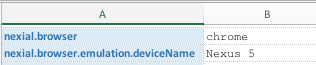
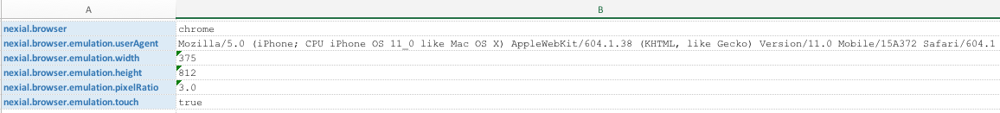
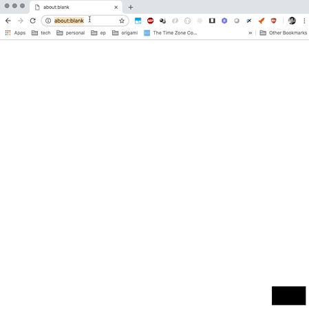
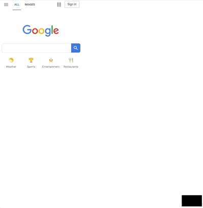

Enabling Firefox automation is straightforward:
- Make sure a recent version of
Firefox
suitable to your platform is installed locally. For Linux and Mac OS,
firefox or
firefox-bin is expected to be found in the $PATH environment variable. The order of
paths in $PATH determines the precedence in being selected as the target executable for
automation. For Windows, Firefox is expected to be installed in either
%ProgramFiles%\Mozilla Firefox or%ProgramFiles(x86)%\Mozilla Firefox.
- Set
nexial.browser to firefox.
- Begin scripting...
Enabling Chrome automation requires the following steps:
- Make sure a recent version of
Chrome suitable to
your platform is installed locally. Linux installation differs based on distro - check distribution vendor
website or Google for more details. Be sure that
google-chrome can be found in
$PATH environment variable. For Mac, Google Chrome is expected to be installed
either in the standard /Applications/Google Chrome.app or in the home directory of the current
user (give precedence).
- Set
nexial.browser to chrome.
- Begin scripting...
Mobile Device Emulation
It is possible to emulate mobile devices during automation via the Chrome webdriver (i.e.
nexial.browser as
chrome).
There are 2 ways of enabling mobile device emulation:
- via the
nexial.browser.emulation.deviceName data variable
- via the
nexial.browser.emulation.userAgent data variable.
The first approach is simpler. Simply specify a mobile device name that is supported by the Chrome browser to
enable such emulation. For example,

The second approach offers finer controls. Along with the "User Agent" string to match the target mobile device,
one can also specify the width (via
nexial.browser.emulation.width data variable), the height
(
nexial.browser.emulation.height data variable), the pixel ratio (via the
nexial.browser.emulation.pixelRatio data variable) and touch activation (via the
nexial.browser.emulation.touch data variable). For example,

Note that
nexial.browser.emulation.pixelRatio defaults to
3.0 and
nexial.browser.emulation.touch defaults to
true.
For a list of supported mobile devices and their respective "user-agent" string, visit the following link:
Chrome's Emulated Devices JSON

For more information about mobile device emulation, visit ChromeDriver's
Mobile Emulation page. While it is cost-effective to use the emulation capability of ChromeDriver, it is
noteworthy that there are
known issues and limitations of using ChromeDriver's mobile
emulation.
Note that uring device emulation, the screen capturing might cause a sudden "grow-and-shrink" behavior as shown
below:

Emulators cannot accurately reflect the real devices in terms of hardware and OS-specific nuances. For more
accurate testing, consider using
BrowserStack
or
CrossBrowserTesting
services (both commercial) instead.
Chrome Embedded Framework, or CEF for short, is
an open-source
framework for embedding chrome browser (technically chromium) in a desktop application. The ability to do
so opens up a wide range of possibilities in application development.
To enable CEF automation, follow these steps:
- Make sure the Chrome-embedded application (AUT) is properly installed. In most cases, one should find a
libcef.dll
or libcef.so in the same location as the CEF-enabled application.
- Set
nexial.browser to
chrome.embedded.
- Set
nexial.browser.embedded.appLocation to the full path of the application executable program.
- Begin scripting...
Electron is an open-source framework to create desktop applications using JavaScript. It combines the use
of Node.js runtime as the backend and Chromium as the frontend engine to create a compelling, cross-platform
desktop GUI framework that powers popular applications such as Atom, Microsoft team, Microsoft Visual Studio
Code, WhatsApp, Slack and Cycligent.
To enable Electron application automation, follow these steps:
- Make sure the target Electron application is properly installed.
- Set
nexial.browser to
electron.
- Set
nexial.browser.electron.appLocation to the full path of the executable program. For MacOS,
the executable is usually found under $APPLICATION/Contents/MacOS/.
- Begin scripting...
Enabling Safari automation requires the following steps:
- Make sure a recent version of
Safari is installed locally. Only MacOS is supported for safari automation at this time.
- Set
nexial.browser to safari.
- Begin scripting...
Enabling IE automation requires the following steps:
- Make sure a recent version of
Internet Explorer suitable to your platform is installed locally. Only Windows 7 and above is
supported at this time.
- Set
nexial.browser to ie.
- Be sure to read through and follow the recommendations listed in
Web Automation On IE.
- Begin scripting...
Enabling IE automation requires the following steps:
- Make sure a recent version of Microsft Edge Browser
suitable to your platform is installed locally. Only Windows 10 is supported at this time.
- Set
nexial.browser to edge.
- Be sure to read through and follow the recommendations listed in
Improving IE Automation (these recommendations apply to
Edge as well!).
- Begin scripting...
BrowserStack is a popular
cloud, web and mobile testing platform that enables developers to test their websites and mobile applications
across on-demand browsers, operating systems, and real mobile devices. This is a paid service.
To enable BrowserStack integration, be sure to read up on the
BrowserStack Integration page.
excerpts from
CrossBrowserTesting.com:
... Browser testing is a method of quality assurance for web applications across multiple browsers. ...
It’s implemented to ensure a website’s functionality and design and includes testing a range of
devices and operating systems being used in the market and customer base.
CrossBrowserTesting
is a popular cloud, web and mobile testing platform that enables developers to test their websites and mobile
applications across on-demand browsers, operating systems, and real mobile devices. And, much like BrowserStack,
this is also a paid service.
To enable CrossBrowserTesting integration, be sure to read up on the
CrossBrowserTesting Integration page.